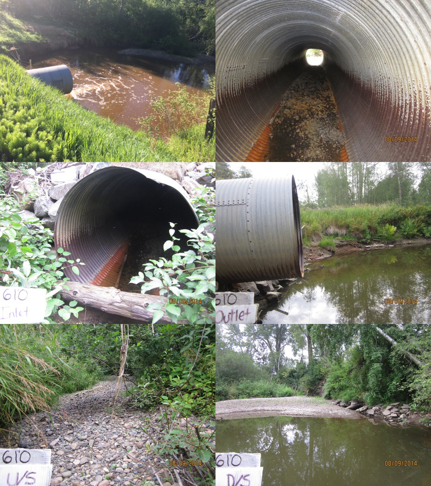
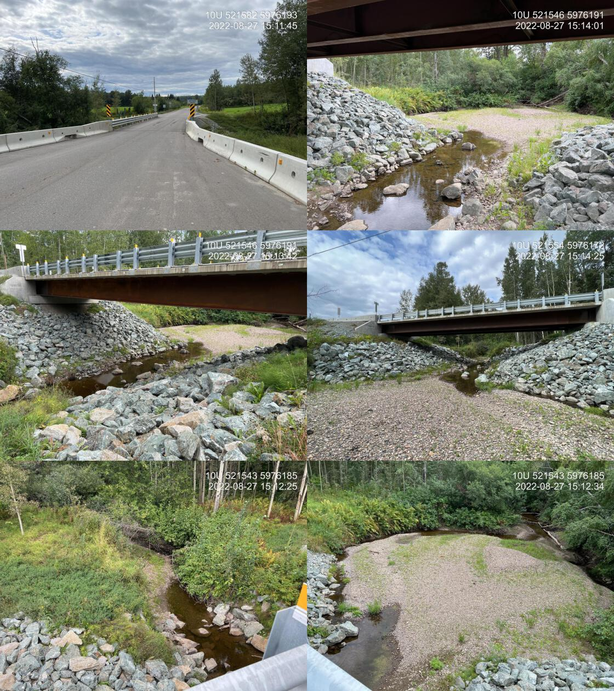
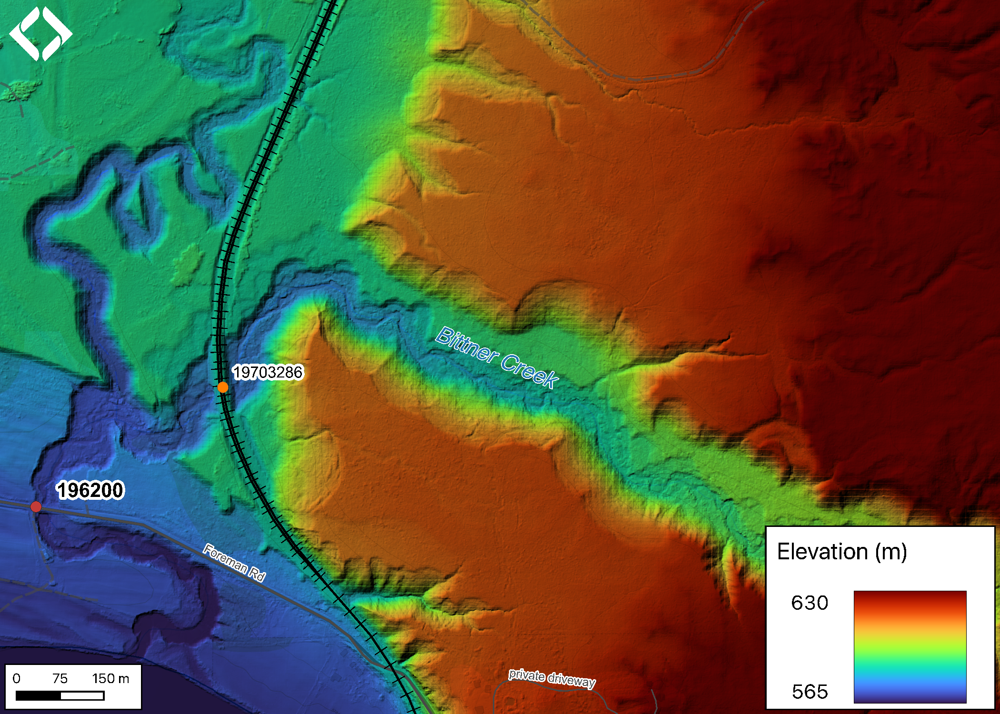

Bittner Creek - 196200 - Monitoring Appendix
PSCIS crossing 196200 on Bittner Creek is located on Forman Road within the municipal boundaries of the City of Prince George. It is the first stream crossing structure upstream of the Fraser River, with numerous modelled and previously assessed crossings above it. The site has been monitored since 2022 under an effectiveness monitoring program for the Ministry of Transportation and Infrastructure (Irvine 2024).
In 2016, immediately downstream of the crossing, the banks of Bittner Creek were armoured to stabilize two areas of erosion (DWB Consulting Services Ltd. 2019). A rock weir was planned at the upstream end of the historic culvert outlet pool to maintain that habitat feature; it is unclear whether it was installed. By 2022 the historic outlet pool had infilled with sediment and no longer provided high or even moderate value habitat (Irvine 2024). Fish passage at crossings on Bittner Creek within the City of Prince George was first inventoried by Lloyd (2005).
Crossing Characteristics
Before remediation, the crossing was a 1.9 m diameter round culvert 20 m in length, with a 0.7 m outlet drop and a 1% culvert slope, ranked a barrier to upstream migration under the provincial protocol (MoE 2011). It was replaced with a bridge prior to the August 2022 reassessment, at which point it ranked passable (Irvine 2024). Photographs before and after replacement are presented in Figures 5.32 and 5.33.
my_caption <- paste0("Culvert on Bittner Creek at PSCIS crossing ", my_site_mon,
" on Forman Road, photographed in August 2014 before replacement.")
knitr::include_graphics("data/photos/196200/before/crossing_all.JPG")
Figure 5.32: Culvert on Bittner Creek at PSCIS crossing 196200 on Forman Road, photographed in August 2014 before replacement.
my_caption <- paste0("Bridge on Bittner Creek at PSCIS crossing ", my_site_mon,
" on Forman Road, photographed in August 2022 following replacement.")
knitr::include_graphics("data/photos/196200/crossing_all.JPG")
Figure 5.33: Bridge on Bittner Creek at PSCIS crossing 196200 on Forman Road, photographed in August 2022 following replacement.
my_caption <- "Lidar generated digital elevation model of Bittner Creek at Forman Road."
knitr::include_graphics("fig/lidar_bittner_fig.png")
Figure 5.34: Lidar generated digital elevation model of Bittner Creek at Forman Road.
Fish Presence
Three lines of evidence from three years do not agree, and the disagreement is the most useful thing this site has produced so far.
The 2022 assessment recorded that the adjacent landowner had not seen salmon spawn in Bittner Creek in thirty years, and that the stream dewaters annually. Numerous parr were nonetheless observed in isolated pools upstream of the newly installed bridge (Irvine 2024).
In June 2023, a fish salvage conducted for the monitoring program captured eight juvenile chinook salmon across three sites within roughly 150 m of the crossing (DWB Consulting Services Ltd. 2024) — direct confirmation of chinook rearing in the reach.
In 2025, a single eDNA sample collected upstream of the crossing returned no detections for any of the four species assayed (Table 5.41), with zero positive droplets across two runs per target.
edna_results_196200 |>
fpr::fpr_kable(
caption_text = paste0("eDNA detection results at PSCIS crossing ", my_site_mon, "."),
scroll = FALSE
)| Site ID | UNBC ID | Detected | Sub-threshold | Not detected |
|---|---|---|---|---|
| 196200_us_ed1 | F60808 | — | — | BULT(0), CHIN(0), COHO(0), SOCK(0) |
A single sample returning nothing where fish were physically captured two years earlier is not evidence of absence. Sample timing relative to flow, the dewatering the landowner describes, and the detection limits of a single grab all bear on it. It does establish why a one-off sample is a weak monitoring instrument on an intermittent system, and why the eDNA record here needs to be built over several years and several points in the season before it can say anything about trend.
Discussion
Flows were low at the time of both the 2022 and 2025 assessments, and the landowner reports seasonal dewatering. That reads as low value habitat, and the literature says otherwise: residual pools within intermittent systems can support high juvenile growth rates and elevated overwinter survival, with smolts emerging from intermittent tributaries measured as considerably larger than those rearing in perennial habitat (Ebersole et al. 2006; Wigington Jr et al. 2006; Maslin and McKinnev 1998). Lower competitive densities and greater food availability are the mechanisms proposed. The eight juvenile chinook salvaged in 2023 sit squarely in that pattern, and it makes the timing of connectivity — whether those fish can leave when flows resume — the question that determines the value of the reach.
Two constraints on that value remain unaddressed upstream of the bridge. A crossing on the Canadian National railway line (modelled_crossing_id 19703286), approximately 400 m upstream of Forman Road, was recommended for assessment and entry into the PSCIS database in 2022 (Irvine 2024); it remains unassessed. Further upstream, PSCIS crossing 196197 on Highway 16 East is ranked a barrier. Replacing the Forman Road structure restored passage at the first crossing above the Fraser, but the reach it opens is still bounded.
Recommendations for continued monitoring at this site:
- Sample eDNA at multiple points through the season rather than once, so results can be read against flow rather than in isolation.
- Continue fish sampling to establish whether chinook use Bittner Creek for spawning as well as rearing.
- Assess the Canadian National railway crossing (
modelled_crossing_id19703286) and load the data to PSCIS, closing a recommendation outstanding since 2022. - Assess the wetland area north of the bridge, connected to the first upstream tributary, to determine whether water storage could be increased through measures such as promoting beaver activity and infilling historic drainage structures — the most direct route to extending the period over which the reach is connected and wetted.
- As the site sits within Prince George city boundaries, pursue collaboration with the University of Northern British Columbia and local First Nations on fish health and movement alongside broader watershed condition, including flow patterns and water temperature.